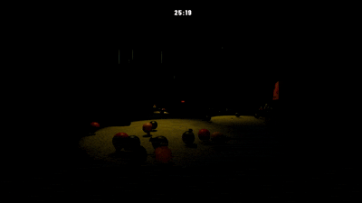
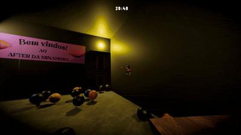

LOCKED UNIT
Uma experiência de Escape Room Terror ambientada em um deposito industrial em campinas. Sem armas, sem inventários: apenas o raciocínio sob o pânico e o relógio correndo.
Sinopse Narrativa
O terror psicológico nascido de ambientes e situações cotidianas da juventude universitária.
Maria acorda com uma forte dor de cabeça, A última lembrança é de uma festa universitária em Campinas, música alta e risadas com amigos. Agora, ela está presa em um depósito de containers desativados.
Através de alto-falantes espalhados pela estrutura, surge uma voz desconhecida — um cara que transformou sua obsessão silenciosa por Maria em um jogo sádico de lógica e fuga. Ele espalhou pistas, códigos e itens da noite anterior pelo local, desafiando-a a provar seu valor intelectual para merecer a liberdade.
Para tornar a punição real, Ele tem um capanga: Augustinho, um guarda noturno, que percorre o pátio. Se ele avistar Maria fora de um esconderijo, não haverá diálogo, ela será pega!
Especificações do Vertical Slice
- Motor: Unity 6 (6000.4.0f1) Universal Render Pipeline (URP)
- Perspectiva: Primeira Pessoa com câmera estabilizada
- Tempo Limite Global: 30 Minutos em tempo real
- Escopo Entregue: 2 Fases completas e jogáveis (Cofre & Genius)
- Sem Combate: Furtividade, linha de visão e mecânica Gaze Freeze
- Acessibilidade: Slider FOV, Iluminação, Anti-Sickness, Sensibilidade e Áudio Legendado
Personagens Principais
Maria (A Jogadora)
Estudante universitária de 21 anos. Determinada, astuta, porém fisicamente vulnerável. Não possui armas nem poderes especiais. Sua sobrevivência depende exclusivamente de sua percepção ambiental, capacidade de conectar pistas desconexas e manter a calma sob pressão de tempo.
Lucas (A Voz do Interfone)
Psicopata que orquestrou o confinamento. Controlador e manipulador, ele não se expõe fisicamente, mas monitora Maria por câmeras de segurança. Comunica-se por alto-falantes espalhados, alternando entre incentivos cínicos, desdém e dicas sarcásticas quando o tempo está esgotando.
AUGUSTINHO (O GUARDA)
O Capanga contratado pelo Lucas para fazer seu trabalho sujo.
O Vertical Slice de Duas Fases
Duas experiências de puzzle de naturezas contrastantes: dedução lógica e memória rítmica sob vigilância.
Um patio DE CONTAINERS & O COFRE
Na Fase 1, Maria deve sair da primeira sala e explorar o pátio do depósito de containers. O objetivo é desvendar a combinação de 7 dígitos de um cofre robusto. O Jogador utiliza o sistema de Inspeção 3D em 360 Graus (E), pegando objetos deixados por Lucas — como garrafas de bebidas, copos descartáveis, cartazes. cerveja e etc. Ao combinar as pistas em ordem cronológica, descobre-se o código, liberando a chave da Sala 2.


UM PUZZLE DE SEQUENCIAS SOBRE PRESSÃO
Maria é presa em uma sala temática de aniversario e precisa acertar a sequencia de 7 luzes sonoras.
O twist de tensão: enquanto a sequência é reproduzida, o Augustinho caminha lentamente do lado de fora da grande janela de vidro. O jogador precisa dividir sua atenção: se continuar olhando apenas para os botões, Augustinho alcança a janela e invade. Para impedir sua aproximação, Maria deve aplicar a mecânica Gaze Freeze (olhar diretamente para o Augustinho através do vidro para paralisar seu passo temporariamente), gerenciando a memória dos padrões coloridos e a vigilância externa simultaneamente.